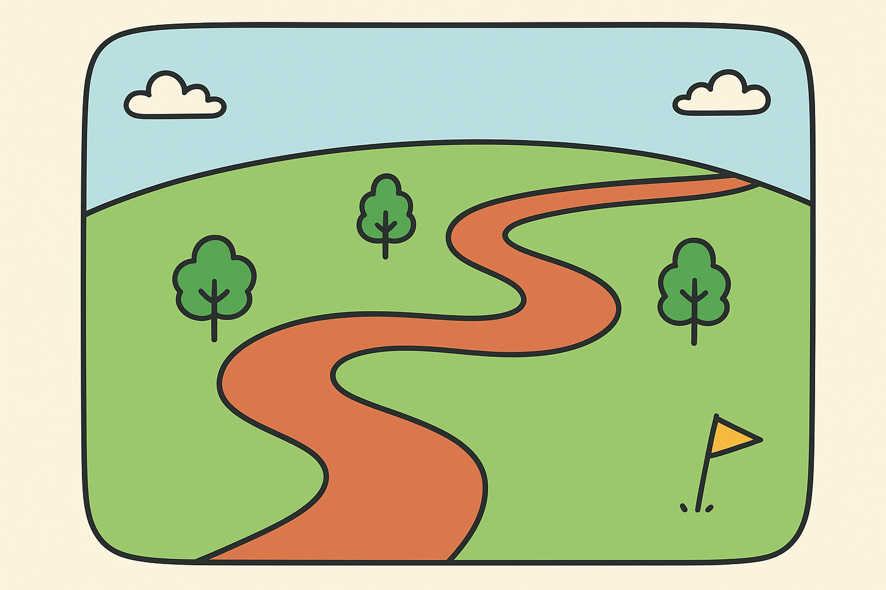

You Are Here
Foundations: Skills and Identity
Growth: Competence and Connections
Integration: Purpose
Message for the Future

You Are Here
Foundations: Skills and Identity
Growth: Competence and Connections
Integration: Purpose
Message for the Future
Building strong relationships and beautiful memories outside the classroom
Taking care of my body and mind
APA Division 53
PhD and PsyD classmates
Previous mentors
Current mentors
I feel that after this first year, I have gained more focus on outcomes as well as receptiveness to new experiences. While I remain focused on goals such as producing research focused on policy in health-related settings, I have learned that I still do not know a lot. I do not know which theoretical orientation best suits me, I do not fully know what clinical population I would like to work with, and I do not know whether research, teaching, or clinical work excites me most. In this way, I am continuing with my research and academic goals, while remaining open to a variety of clinical, academic, and extracurricular experiences that will inform my developing professional identity.
Dear Future Me,
As you begin post-grad life, pause a second: How has your professional identity evolved since you first wrote this? What interests are guiding you now, and who is in your support circle? Who has helped you grow, and what have you learned from them?
I hope you continue to remember why you started: to keep learning and to hold space for the stories from people we don’t often hear from. Keep seeking out narratives, honoring them, and amplifying them.
Best,
First-Year You